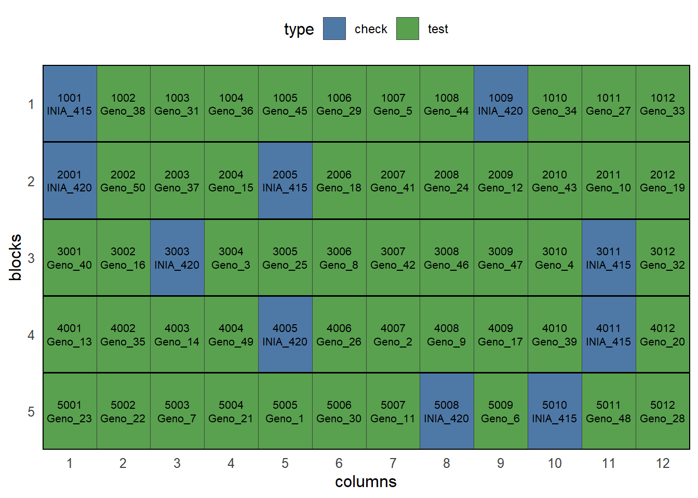
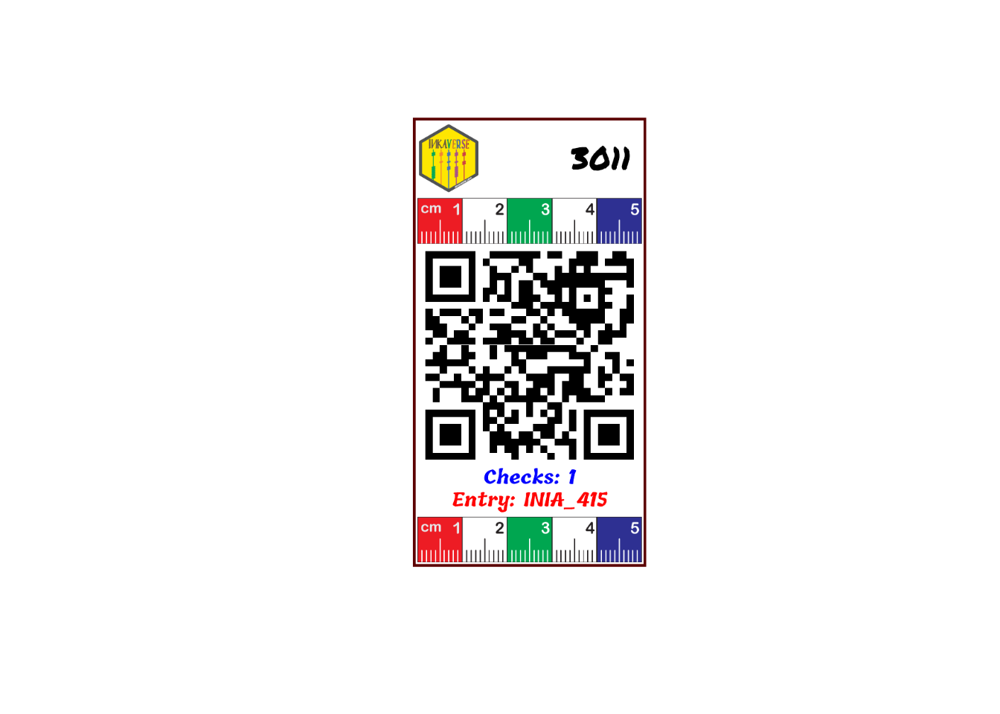

Planning an experiment follows a reproducible routine:
-
Load required libraries: Load
inti,knitr, anddplyrpackages. - Define factor levels: Set up lists with genotypes, treatments, and management factors.
- Dispatch design generator: Choose between CRD, RCBD, Split-plot, or Augmented designs.
- Plot the field sketch: Verify spatial layouts and serpentine/zigzag sequences.
- Label design: Design the experimental labels to facilitate the data collection.
- Export to Field Book app: Generate field-ready sheets with trait parameters.
Designs with Two Factors
When evaluating two or more factors, four designs become available: CRD, RCBD, Split-plot RCBD, and Augmented.
Augmented Design in RCBD (Augmented RCBD)
The Augmented Design is recommended for screening large collections of entries (e.g., accessions or candidate clones) when seed or space is limited, repeating check varieties in each block while evaluating new entries only once.
# 1. Define checks (commercial controls) and new accessions
checks <- c("INIA_415", "INIA_420")
entries <- paste0("Geno_", 1:50)
# 2. Generate Augmented layout: 18 entries + (2 checks x 3 blocks) = 24 plots
aug_exp <- design_augmented(
checks = checks,
entries = entries,
blocks = 5,
zigzag = FALSE,
seed = 2026
)
# Fieldbook preview
aug_exp$fieldbook %>%
head(10) %>%
knitr::kable(caption = "Augmented RCBD Fieldbook preview")| qrcode | plots | ntreat | entry | type | checks | block | sort | rows | cols | design |
|---|---|---|---|---|---|---|---|---|---|---|
| inkaverse_1001_INIA_415 | 1001 | 1 | INIA_415 | check | 1 | 1 | 1 | 1 | 1 | augmented |
| inkaverse_1002_Geno_38 | 1002 | 40 | Geno_38 | test | 0 | 1 | 2 | 1 | 2 | augmented |
| inkaverse_1003_Geno_31 | 1003 | 33 | Geno_31 | test | 0 | 1 | 3 | 1 | 3 | augmented |
| inkaverse_1004_Geno_36 | 1004 | 38 | Geno_36 | test | 0 | 1 | 4 | 1 | 4 | augmented |
| inkaverse_1005_Geno_45 | 1005 | 47 | Geno_45 | test | 0 | 1 | 5 | 1 | 5 | augmented |
| inkaverse_1006_Geno_29 | 1006 | 31 | Geno_29 | test | 0 | 1 | 6 | 1 | 6 | augmented |
| inkaverse_1007_Geno_5 | 1007 | 7 | Geno_5 | test | 0 | 1 | 7 | 1 | 7 | augmented |
| inkaverse_1008_Geno_44 | 1008 | 46 | Geno_44 | test | 0 | 1 | 8 | 1 | 8 | augmented |
| inkaverse_1009_INIA_420 | 1009 | 2 | INIA_420 | check | 1 | 1 | 9 | 1 | 9 | augmented |
| inkaverse_1010_Geno_34 | 1010 | 36 | Geno_34 | test | 0 | 1 | 10 | 1 | 10 | augmented |
# Field layout visualization
tarpuy_plotdesign(
data = aug_exp,
factor = "type",
fill = c("plots", "entry")
)
Label
The experimental field book generated by the design is used as the input data for label creation. Each row represents an experimental unit, allowing the automatic generation of individualized labels.
# Experimental fieldbook
fb <- aug_exp$fieldbookCustomize the label layout
The label layout can be customized by combining text, images and QR codes. Each layer can use values from the experimental field book, allowing automatic generation of labels for every experimental plot.
Load package and import fonts.
font <- c("Permanent Marker", "Tillana", "Courgette")
huito_fonts(font)You can find more fonts in https://fonts.google.com/
Label design
label <- fb %>%
label_layout(
size = c(5.2, 10)
,
border_color = "#5C0000"
,
border_width = 1.5
) %>%
include_image(
value = "https://inkaverse.com/img/inkaverse.png"
,
size = c(1.3, 1.5)
,
position = c(0.8, 9.1)
) %>%
include_text(
value = "plots"
,
position = c(4.2, 9.1)
,
size = 20
,
color = "black"
,
fontface = "bold"
,
font = font[1]
) %>%
include_image(value = "https://huito.inkaverse.com/img/scale.pdf"
,
size = c(5, 1)
,
position = c(2.6, 7.7)) %>%
include_barcode(value = "qrcode"
,
size = c(5, 5)
,
position = c(2.6, 4.7)) %>%
include_text(
value = "checks"
,
position = c(2.6, 2)
,
size = 12
,
prefix = "Checks: "
,
color = "blue"
,
font = font[2]
,
fontface = "bold"
) %>%
include_text(
value = "entry"
,
position = c(2.6, 1.5)
,
size = 12
,
prefix = "Entry: "
,
color = "red"
,
font = font[2]
,
fontface = "bold"
) %>%
include_image(value = "https://huito.inkaverse.com/img/scale.pdf"
,
size = c(5, 1)
,
position = c(2.6, 0.6)) Label preview
The preview mode label_print(mode = "preview") generate a example of the label design from a random row of the data set.

Generate the complete labels
If you want generate the complete labels list, change: label_print(mode = "complete").
label %>%
label_print(mode = "complete"
, filename = "vertical-aug")